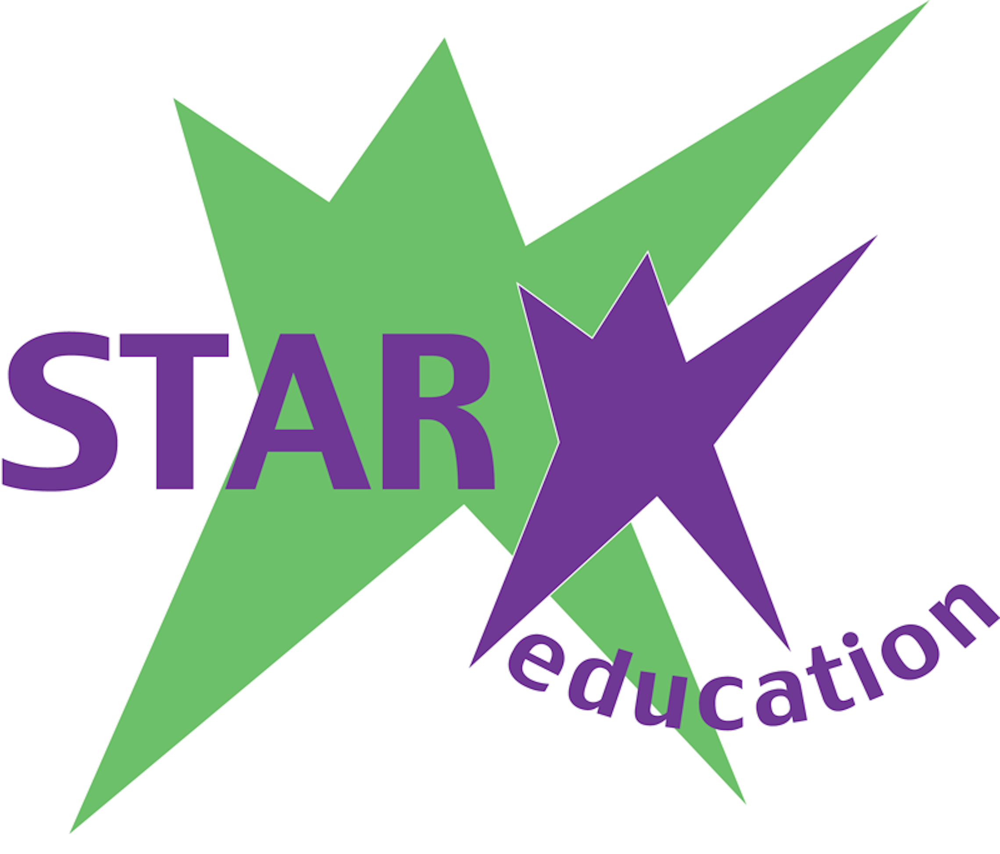

We transform Los Angeles neighborhoods using a holistic approach to reduce poverty by
ensuring families have access to high-quality schools, wraparound education, and technology services,
enabling a successful transition from cradle to college and career.
Our History
STAR Education began its work in the 1980's, when greatly diminished resources for California
public schools and latchkey children emerged as two major challenges to child welfare. In 1986,
husband and wife team Katya and Erick Bozzi Sr. activated parents, professionals in partnership
with the 10th District PTA in their West LA community to address the critical need for safe, high
quality educational and enrichment opportunities for children.
Together, they mobilized alternative and innovative resources to enhance youth education and
development, bolster the struggling public school in their community, and provide a safe and
supportive environment for children after school. STAR recognized the need to gather community
partners, universities, and local leaders to rally around their public schools to bring new
resources to help schools and school districts realize their educational goals. In 1993,
STAR Education was incorporated as a 501(c)(3) non-profit organization.
In 1997, Erick, Sr. and Katya Bozzi, and their children, Erick II and Katiana, founded the
STAR Eco Station as a subsidiary of STAR Education in partnership with US Fish and Wildlife.
The STAR Eco Station is an environmental science museum and exotic wildlife rescue facility
in Culver City, Calif., where visitors have an opportunity to learn how they can be involved
in the preservation of the planet and have the chance to interact with rescued endangered
and exotic wildlife.
What began over 25 years ago with two innovative parents, a handful of outstanding
professionals from the community, and one elementary school in West Los Angeles has
been cultivated into a large-scale effort including over 1000 highly-skilled employees,
as well as partnerships with government agencies, private organizations, parents and community
groups. STAR's programs support and enhance school-day curriculum and broaden the amenities
that schools offer their communities, reinforcing the public school site as both the community
focal point and as a center for state of the art learning.
Today, STAR benefits over a million learners throughout California. Each day, STAR comes to school
campuses in over 60 school districts throughout California, Tennessee, and New York to connect students
to the lessons and the resources they need to become lifelong learners. Through the years, STAR has
enabled and inspired students to attend major universities, choose exciting career paths, and do
meaningful work throughout the world.

JOIN OUR TEAM
Click to Join

STAR services more than 500 schools in over 60 school districts,
reaching over a million students and their families every year. STAR
works with students, families, schools and communities to provide
exceptional educational and cultural enrichment opportunities.
Contact
6101 W Centinela Ave # 380,
Culver City, CA 90230
info@starinc.org
© STAR Inc.
ALL RIGHTS RESERVED